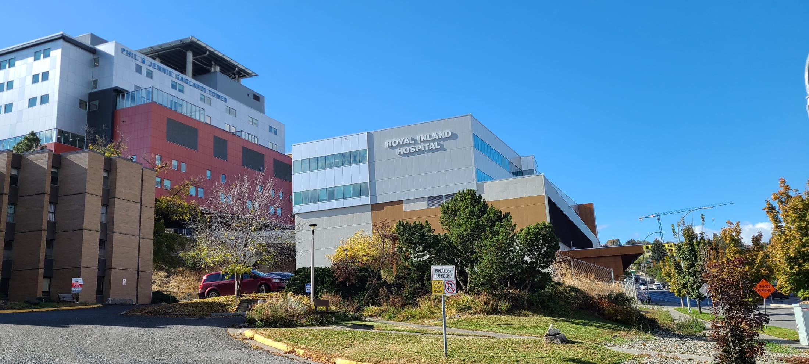

RIH Auxiliary Kamloops – Volunteer and Support Your Local Hospital
Royal Inland Hospital Afternoon Auxiliary
Supporting RIH Through Volunteer Service and Community Engagement
The Afternoon Auxiliary is a Registered Society working to supply and render services to improve the comfort, health and welfare of the patients and staff of Royal Inland Hospital, and the surrounding community. We provide essential services, operate our thrift shop and gift shop, and fundraise to improve healthcare facilities at RIH.
Join our community of dedicated volunteers and make a real difference in healthcare delivery for the Kamloops region. Whether through volunteer opportunities, shopping at our thrift store, or supporting our fundraising efforts, every contribution helps us serve Royal Inland Hospital and our community better.
Ready to Make a Difference?
Join our community of dedicated volunteers and supporters. Every contribution, no matter how small, helps us serve our community better.